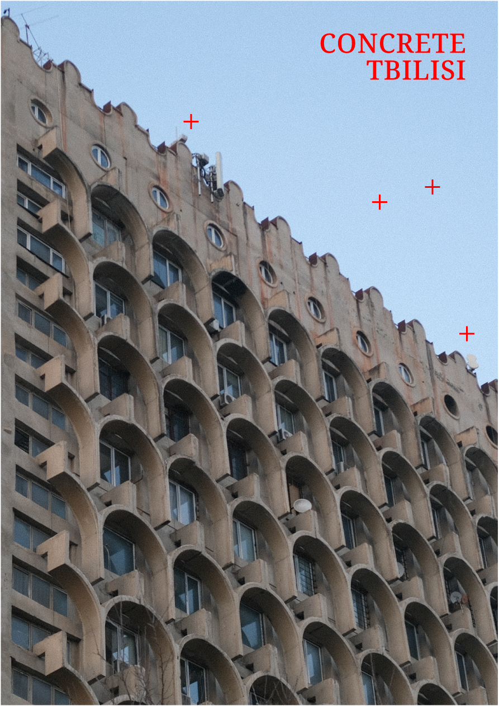
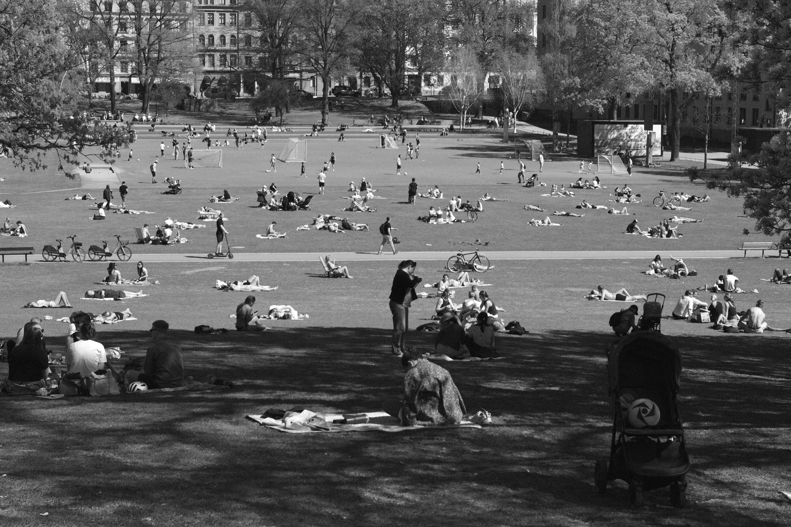
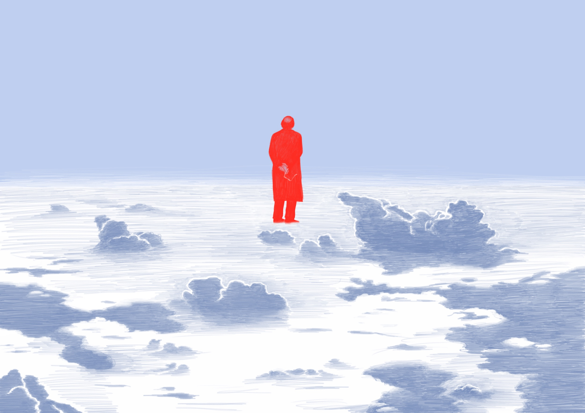

Amir Mamin
a multidisciplinary artist working across graphic media, photography and video
about
contact
wait / go
2025-26
concrete tbilisi
2025

what would you do if it was the end of the world?
2026-now

above the clouds
2022
